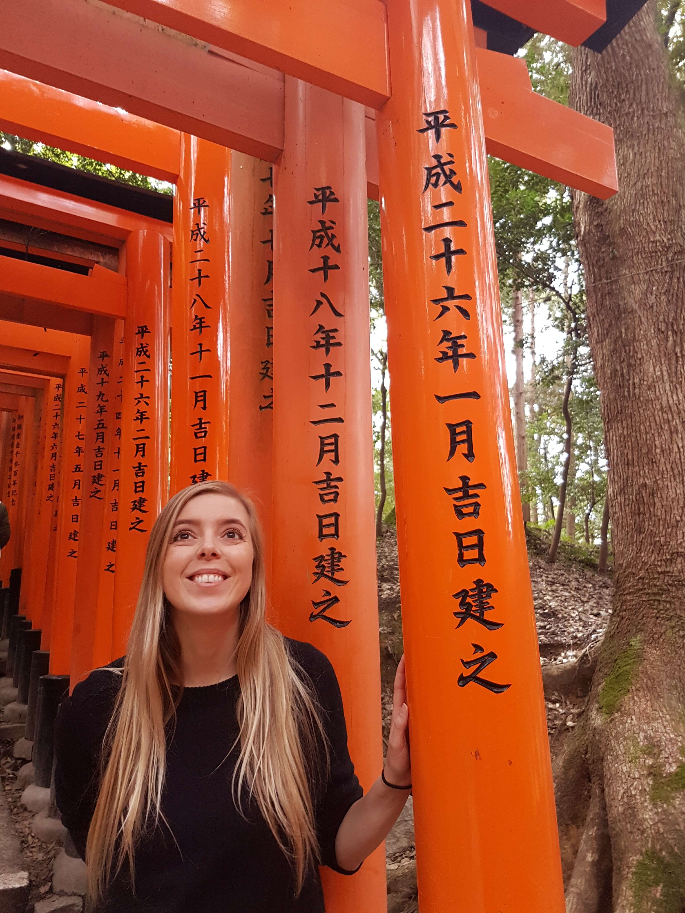

Ég heiti Sólveig Ásta Friðriksdóttir. Ég er fædd og uppalin í Reykjavík. Í dag á ég heima í Vesturbænum með eiginmanni mínum, Snæ Seljan Þóroddssyni og dóttur okkar Emblu. Ég hef áhuga á forritun, jógaiðkun, útivist, matreiðslu og handavinnu af ýmsum toga.
